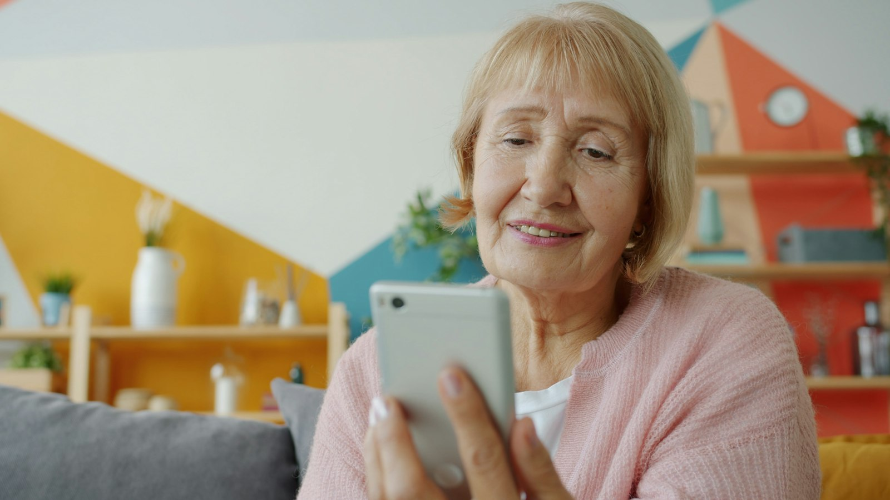
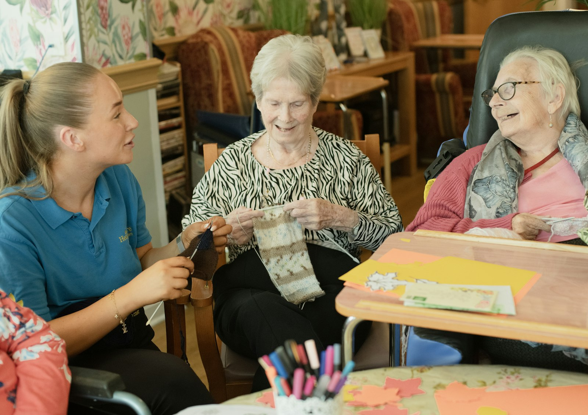
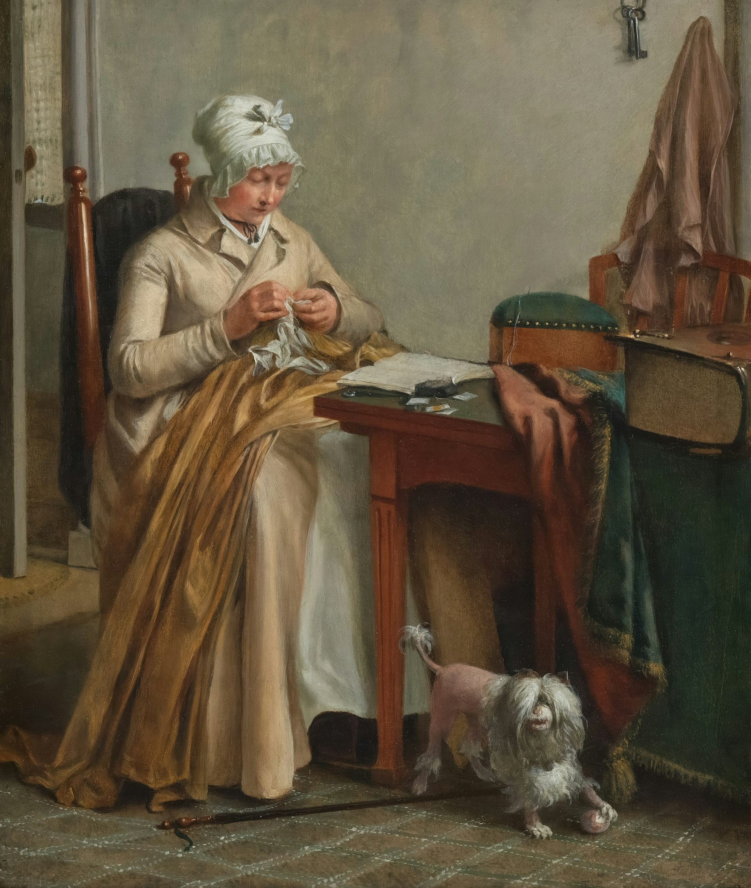
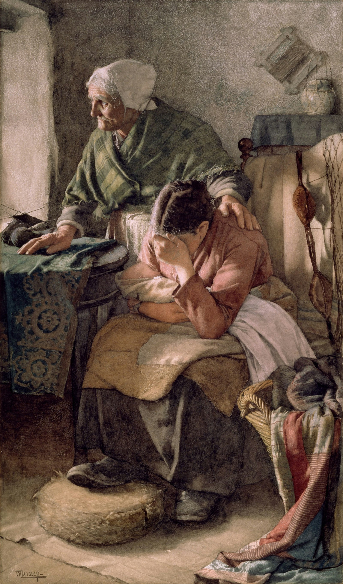
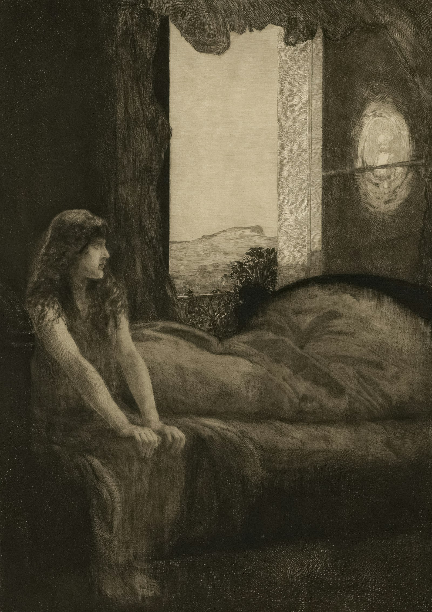
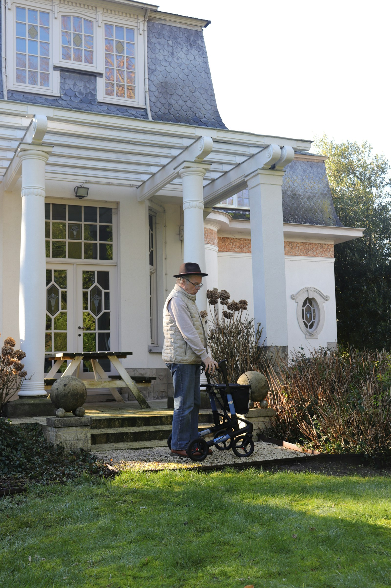
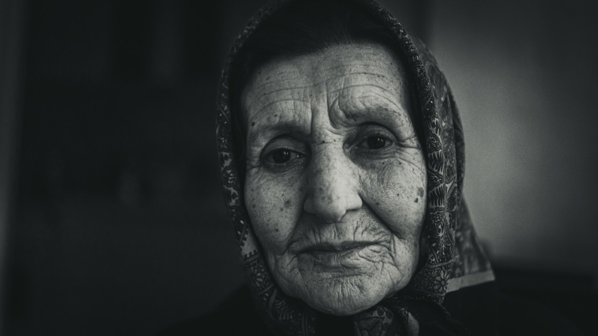
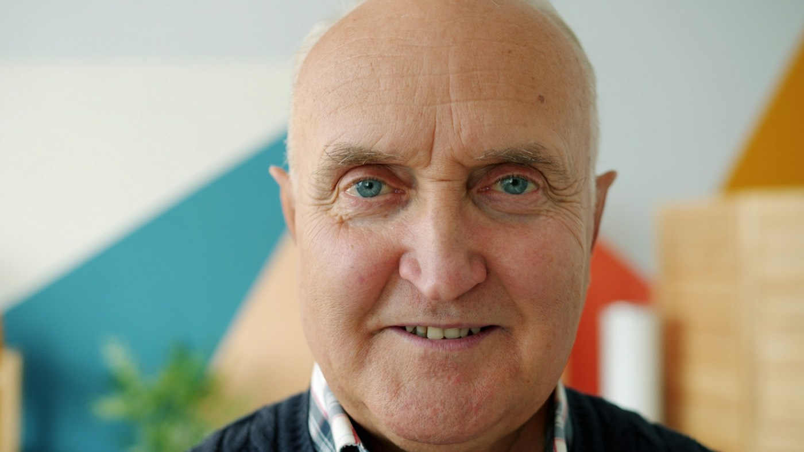

A woman using a shower head in an accessible bathroom
A woman using a shower head in an accessible bathroomWho it is for
For people who need hands-on help, and want to keep their dignity.
Maybe a fall has made the shower frightening. Maybe arthritis makes buttons impossible. Maybe your mum has started wearing the same clothes for a week.
Personal care means help with the most private parts of the day, done with patience, privacy and as much independence as they want.
What is included
A clear list of what we help with.
- Bathing, showering and bed baths
- Dressing and undressing
- Toileting and continence care
- Transfers and moving safely
- Grooming: hair, shaving, teeth, nails
- Help to eat and drink
- Skin checks and reporting changes
- Getting ready for appointments
Tasks and training
How we train for each task.
| Task | What we do | How we train for it |
|---|---|---|
| Bathing and showering | Shower, bath or bed bath, at their pace, with towels kept over them | Practical session on privacy, skin checks and water safety |
| Dressing | Choosing clothes with them, helping with buttons, shoes and compression stockings | Offering choices, adaptive clothing, dressing someone in pain |
| Toileting and continence | Prompting, help in the bathroom, continence products, changing and skin care | Dignity and infection control, recognising urinary infections |
| Transfers | Bed to chair, chair to toilet, using hoists or frames that are in the home | Safe moving and handling, equipment checks |
| Grooming | Hair, shaving, nails (not medical foot care), teeth and dentures, make-up if they like it | Looking how they want to look, not how we would |
| Eating | Setting up meals, cutting food, gentle help to eat, recording meals and drinks | Swallowing warning signs, when to call for help |

Our privacy promise.
Doors closed. Towels over them. Every step explained before it happens. They decide the order. Nothing about their body goes in a photo or a message without their agreement, ever.
 An older woman wearing glasses and a necklace
An older woman wearing glasses and a necklaceChoose a male or female support worker
Same-gender care is a standard option. Tell us at the assessment and we build the team around it. If a backup is needed, they are the same gender too.
- Same-gender team on request
- Language and culture taken into account
- You can ask to change a support worker, no reason needed
How we are different









Personal care without the rush.
Three-hour minimum
Long enough to do it properly, not a 15-minute dash.
Dementia-trained, every one
Every support worker finishes our dementia training before their first visit, not 'when they get to it'.
The same small team
Two or three support workers who know them, and a backup you meet before day one.
You can see it happen
The family app shows check-ins, care notes and a weekly summary.
Promises with numbers
Start times, replacement times and call-back times we measure and publish.
Price
From AUD $102/hour
Personal care includes everything on this page and the companionship in between.
Your exact price is confirmed in writing after the free assessment. No sign-up fee, no long contract. GST-free where it applies to aged care services.
Questions
Five questions about personal care.
Can I ask for a male or female support worker?
Yes. Same-gender care is a standard option, not a special request, and we plan rotas around it.
What if they are embarrassed?
That is normal. We start with the least personal tasks, explain each step, keep them covered and let them do every part they can.
How long is a visit?
Visits are at least 3 hours, so nothing is rushed. Shorter morning routines can be combined with other help.
Can you help if they use a hoist?
Yes, if the equipment is in the home, has been assessed, and our support workers have been shown how to use it safely.
Is personal care a medical service?
No. It is hands-on help with daily living. Nursing tasks are done by nurses.
No question matches. Call us and ask a person.
What this does not cover
- Wound care, catheter changes, injections or other nursing tasks
- Medical foot care such as cutting thick or diseased toenails (a podiatrist does this)
- Lifting someone without the right equipment when an assessment says it is needed
Join the waitlist Call (02) 5550 0142

Good days are made of ordinary moments.
Tea in the right cup. A walk in the garden. Someone who listens.





Next step
You do not have to work this out alone.
Call (02) 5550 0142 and a care advisor will listen first, then tell you plainly what we would do and what it would cost.